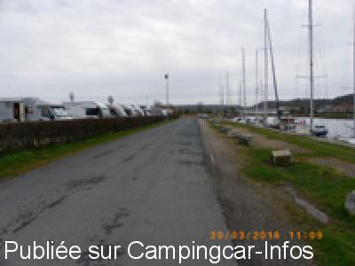
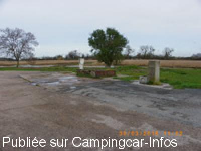
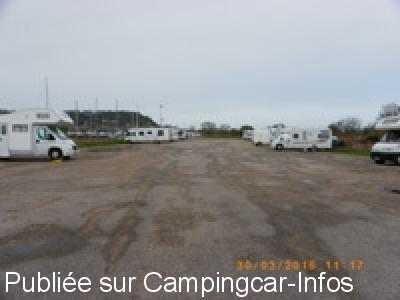
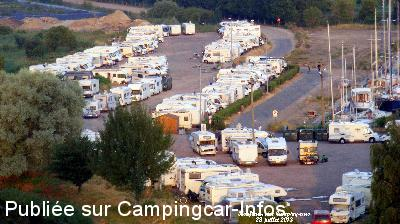
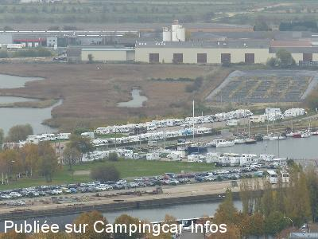
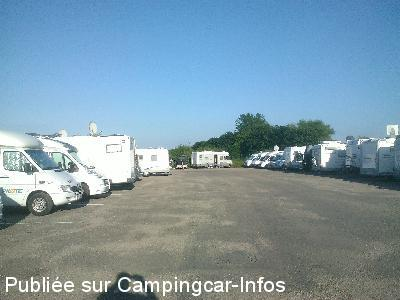

ASN = Aire de services avec stationnement nuit possible de :
HONFLEUR
(N° 577)
Accès/adresse :
Bassin de l'Est
14600 HONFLEUR
14600 HONFLEUR
Latitude : (Nord) 49.41948° Décimaux ou 49° 25′ 10′′
Longitude : (Est) 0.24187° Décimaux ou 0° 14′ 30′′
Tarif : 2016
Stationnement, services, électricité 5 A : 11 €
Paiement par horodateur carte bancaire ou espèces
Type de borne : Artisanale
Services :


Tous commerces
Autres informations :
260 emplacements
2 aires de vidanges
Tel : +33(0)231 818 800
http://www.ville-honfleur.com/

Le 01/04/2016 par eastwood

Le 01/04/2016 par eastwood

Le 01/04/2016 par eastwood

Le 25/02/2015 par luther35410

Le 05/11/2014 par FRANCK

Le 24/06/2014 par daytona 62920
de
POIROUF
le 22/04/2016 :
de passage le 15 Avril 2016
11 euros pour 24 h avec électricité (si vous n'arrivez pas trop tard car pas de prises pour tous les C.C.) un peu cher !! vous ne pouvez pas mettre un petit chauffage électrique sinon vous faites disjoncter et le parking est rempli de flaques d'eau et les alentours de la borne de service pas très propres
la municipalité pourrait faire un effort
de passage le 15 Avril 2016
11 euros pour 24 h avec électricité (si vous n'arrivez pas trop tard car pas de prises pour tous les C.C.) un peu cher !! vous ne pouvez pas mettre un petit chauffage électrique sinon vous faites disjoncter et le parking est rempli de flaques d'eau et les alentours de la borne de service pas très propres
la municipalité pourrait faire un effort
de
rafenzo
le 14/04/2016 :
11 euros pour 24h payable à l horodateur en CB ou liquide
un peu cher pour un parking non fermé avec un parking avec des trous et quand il pleut franchement pas terrible avec les flaques
mitigé sur cette aire.
11 euros pour 24h payable à l horodateur en CB ou liquide
un peu cher pour un parking non fermé avec un parking avec des trous et quand il pleut franchement pas terrible avec les flaques
mitigé sur cette aire.
de
Ninou77
le 18/01/2016 :
18 janvier 2016 parking calme à cette période proche du centre ville. Dommage de très nombreuses flaques d'eau et trous. Pour11 euros on pourrait espérer ne pas avoir les pieds dans l'eau.
18 janvier 2016 parking calme à cette période proche du centre ville. Dommage de très nombreuses flaques d'eau et trous. Pour11 euros on pourrait espérer ne pas avoir les pieds dans l'eau.
de
PapyJP
le 19/10/2015 :
17/10/2015: Beaucoup de monde mais il y avait de la place de libre. Le principal reproche que l'on puisse faire est la présence de trou dans la chaussée et les flaques d'eau; à 11 € par jour on est en droit d'attendre un sol dépourvu de ces inconvénients. 200 véhicules*11€ = 2200€ qui rentre dans les caisses de la commune, il y a de quoi réparer l'aire?
17/10/2015: Beaucoup de monde mais il y avait de la place de libre. Le principal reproche que l'on puisse faire est la présence de trou dans la chaussée et les flaques d'eau; à 11 € par jour on est en droit d'attendre un sol dépourvu de ces inconvénients. 200 véhicules*11€ = 2200€ qui rentre dans les caisses de la commune, il y a de quoi réparer l'aire?
de
pascal
le 03/09/2015 :
toujours autant de monde se samedi 22 août au soir
mais toujours aussi agréable et fort pratique.
toujours autant de monde se samedi 22 août au soir
mais toujours aussi agréable et fort pratique.
de
annick et bernard
le 13/08/2015 :
aire bien remplie mais calme.pratique pour visiter la ville à pied.marché très agréable et vieille ville superbe.merci de nous recevoir
aire bien remplie mais calme.pratique pour visiter la ville à pied.marché très agréable et vieille ville superbe.merci de nous recevoir
de
lebullois
le 27/06/2015 :
Passé 4 nuits en juin car nous adorons ce coin de Normandie. Le boulanger passe à 08:30 mais je préfère le choix des boulangeries de la ville et ils en a de très bonnes. Idéale pour visiter Deauville avec le car et très bon marché
Gérants vraiment sympa. Je préfère le poisson des pécheurs sur le port et meilleur marché.
Passé 4 nuits en juin car nous adorons ce coin de Normandie. Le boulanger passe à 08:30 mais je préfère le choix des boulangeries de la ville et ils en a de très bonnes. Idéale pour visiter Deauville avec le car et très bon marché
Gérants vraiment sympa. Je préfère le poisson des pécheurs sur le port et meilleur marché.
de
eastwood
le 01/06/2015 :
Dégoutés par l'aspect boueux du camping du Phare d'Honfleur, nous avons opté pour cette aire le week end de Paques 2015 et ne l'avons pas regretté. Pourtant ce week end là, l'aire était bondée (plus de 200 CC comptabilisés) et nous en avons vu qui repartaient car pas de place ! nous n'avons pas pu nous brancher électriquement (car trop peu de branchement électrique) mais cela nous était égal car nous sommes autonomes avec les panneaux solaires, par contre, pour certains CC ce détail a posé problème. L'aire est idéal pour visiter Honfleur (10 mn à pied), il y a même un Casino à proximité (fermé le mercredi) et une poissonnerie qui vend un poisson extra. Le boulanger passe le matin et il klaxonne (à 8 h si ma mémoire est bonne) et pour le stationnement il faut payer à l'horodateur. Il y a deux stations de vidange sur le site, les places au fond de l'aire sont les plus agréables, car les CC sont alignés le long de l'herbe. Notre parking ne comportait pas de "trous" (cf les commentaires précédant) et nous avons passé trois nuits sans aucun problème sur cette aire. Nous y reviendrons bien volontiers.
Dégoutés par l'aspect boueux du camping du Phare d'Honfleur, nous avons opté pour cette aire le week end de Paques 2015 et ne l'avons pas regretté. Pourtant ce week end là, l'aire était bondée (plus de 200 CC comptabilisés) et nous en avons vu qui repartaient car pas de place ! nous n'avons pas pu nous brancher électriquement (car trop peu de branchement électrique) mais cela nous était égal car nous sommes autonomes avec les panneaux solaires, par contre, pour certains CC ce détail a posé problème. L'aire est idéal pour visiter Honfleur (10 mn à pied), il y a même un Casino à proximité (fermé le mercredi) et une poissonnerie qui vend un poisson extra. Le boulanger passe le matin et il klaxonne (à 8 h si ma mémoire est bonne) et pour le stationnement il faut payer à l'horodateur. Il y a deux stations de vidange sur le site, les places au fond de l'aire sont les plus agréables, car les CC sont alignés le long de l'herbe. Notre parking ne comportait pas de "trous" (cf les commentaires précédant) et nous avons passé trois nuits sans aucun problème sur cette aire. Nous y reviendrons bien volontiers.
de
Maurice et Jacqueline
le 26/09/2014 :
une aire surpeuplée et qui sert de stationnement aussi pour la journée et vous payez quand même 10 €. La municipalité devrait prendre exemple sur d'autres communes qui modulent leur prix en fonction de la durée de stationnement avec ticket à l'entrée et paiement à la sortie (exemple superbe à Aigues-morte). Aucune place matérialisée et les branchements électriques au compte-goutte. Nous y sommes restés le temps de la visite de la belle ville de Honfleur mais nous n'y reviendrons certainement pas.
une aire surpeuplée et qui sert de stationnement aussi pour la journée et vous payez quand même 10 €. La municipalité devrait prendre exemple sur d'autres communes qui modulent leur prix en fonction de la durée de stationnement avec ticket à l'entrée et paiement à la sortie (exemple superbe à Aigues-morte). Aucune place matérialisée et les branchements électriques au compte-goutte. Nous y sommes restés le temps de la visite de la belle ville de Honfleur mais nous n'y reviendrons certainement pas.
de
Alex and Justine Wilkinson
le 05/09/2014 :
Visited August 14th 2014, very busy with it being a public holiday next day.Have never been on a more crowded aire than this.Parking in the middle, on the grass, anywhere. If you want electricity you will need a very long extension, even then not guaranteed. Honfleur is a great place to visit, suggest you choose your time of year.
Visited August 14th 2014, very busy with it being a public holiday next day.Have never been on a more crowded aire than this.Parking in the middle, on the grass, anywhere. If you want electricity you will need a very long extension, even then not guaranteed. Honfleur is a great place to visit, suggest you choose your time of year.
de
Pascal
le 01/09/2014 :
Je rejoins les commentaires précédents à savoir aire trés bien placée, vite saturée (conseil: mettre ses roues avant 14h pour être sûr d'avoir l'électricité), qui mériterait à être rafraichie compte tenu des "rentrées" financières possibles.
Je rejoins les commentaires précédents à savoir aire trés bien placée, vite saturée (conseil: mettre ses roues avant 14h pour être sûr d'avoir l'électricité), qui mériterait à être rafraichie compte tenu des "rentrées" financières possibles.
de
René LEMAIRE
le 22/07/2014 :
passé le Week End du 19 au 20 juillet, très agréable au vu du temps clément, très calme pour dormir. Cependant nous avons eu un problème avec notre chien mais très difficile de trouver un vétérinaire. Grace au personnel de la Pizzeria en face du parking, le problème a été résolu, vétérinaire OK. Merci à la municipalité et aux commerçant pour leur gentilesse.
passé le Week End du 19 au 20 juillet, très agréable au vu du temps clément, très calme pour dormir. Cependant nous avons eu un problème avec notre chien mais très difficile de trouver un vétérinaire. Grace au personnel de la Pizzeria en face du parking, le problème a été résolu, vétérinaire OK. Merci à la municipalité et aux commerçant pour leur gentilesse.
de
dejean
le 17/07/2014 :
le 04/07/2014
Le parking était plein ( 210 CC d'aprés la personne qui verifie les tikets de stationnement )
Un rapide calcul fait que la ville engrange 2100 euros pour une journée
Cette aire , par ailleurs trés bien située , mériterait un petit peu de rénovation
Les robinets d'eau tiennent debout par habitude , les prises électriques sont clairsemées et les bouteilles de verre vides sont récupérées dans un vieux caddy de supermarché ( sic )
la ville devrait nous respecter un peu mieux
le 04/07/2014
Le parking était plein ( 210 CC d'aprés la personne qui verifie les tikets de stationnement )
Un rapide calcul fait que la ville engrange 2100 euros pour une journée
Cette aire , par ailleurs trés bien située , mériterait un petit peu de rénovation
Les robinets d'eau tiennent debout par habitude , les prises électriques sont clairsemées et les bouteilles de verre vides sont récupérées dans un vieux caddy de supermarché ( sic )
la ville devrait nous respecter un peu mieux
de
journois
le 30/06/2014 :
De passage pour le week-end du 28 06 2014, l'aire était bondée et il est dommage que tous le monde paye 10 euros / 24 heures même pour ceux qui ne peuvent avoir un branchement électrique. la ville de Honfleur devrait remédier à ce problème et même agrandir son aire afin d'avoir encore plus de C/C pour séjournée dans cette magnifique ville.
De passage pour le week-end du 28 06 2014, l'aire était bondée et il est dommage que tous le monde paye 10 euros / 24 heures même pour ceux qui ne peuvent avoir un branchement électrique. la ville de Honfleur devrait remédier à ce problème et même agrandir son aire afin d'avoir encore plus de C/C pour séjournée dans cette magnifique ville.